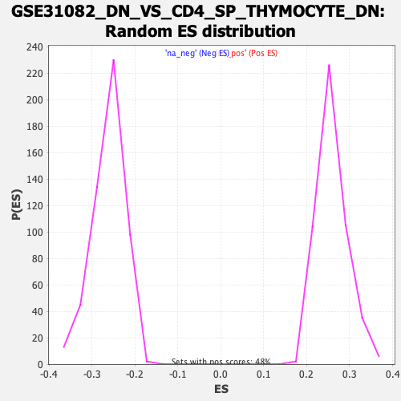

Profile of the Running ES Score & Positions of GeneSet Members on the Rank Ordered List
| Dataset | qlf.KOd4vsWTd4_gsea_score |
| Phenotype | NoPhenotypeAvailable |
| Upregulated in class | na_neg |
| GeneSet | GSE31082_DN_VS_CD4_SP_THYMOCYTE_DN |
| Enrichment Score (ES) | -0.5854416 |
| Normalized Enrichment Score (NES) | -2.241207 |
| Nominal p-value | 0.0 |
| FDR q-value | 0.0 |
| FWER p-Value | 0.0 |
| SYMBOL | RANK IN GENE LIST | RANK METRIC SCORE | RUNNING ES | CORE ENRICHMENT | |
|---|---|---|---|---|---|
| 1 | ENO3 | 14 | 6.531 | 0.0208 | No |
| 2 | MAPKAPK3 | 90 | 4.722 | 0.0296 | No |
| 3 | GSAP | 135 | 4.338 | 0.0401 | No |
| 4 | SDHAF1 | 403 | 3.068 | 0.0247 | No |
| 5 | FKBP1A | 807 | 2.248 | -0.0067 | No |
| 6 | SP110 | 822 | 2.232 | -0.0004 | No |
| 7 | ANXA6 | 868 | 2.174 | 0.0026 | No |
| 8 | NFAT5 | 883 | 2.152 | 0.0086 | No |
| 9 | TBL1X | 1128 | 1.805 | -0.0089 | No |
| 10 | PTPN6 | 1261 | 1.665 | -0.0160 | No |
| 11 | TNFSF8 | 1478 | 1.471 | -0.0319 | No |
| 12 | GGT1 | 1633 | 1.348 | -0.0422 | No |
| 13 | B4GALNT1 | 1663 | 1.327 | -0.0405 | No |
| 14 | SLC17A9 | 1773 | 1.247 | -0.0469 | No |
| 15 | RAP2A | 1947 | 1.117 | -0.0598 | No |
| 16 | SETD5 | 1958 | 1.107 | -0.0570 | No |
| 17 | FOXJ2 | 1965 | 1.104 | -0.0538 | No |
| 18 | IRF1 | 2314 | 0.889 | -0.0845 | No |
| 19 | NR4A2 | 2346 | 0.874 | -0.0845 | No |
| 20 | HECTD2 | 2513 | 0.795 | -0.0979 | No |
| 21 | LYSMD3 | 2667 | 0.733 | -0.1102 | No |
| 22 | RELB | 2989 | 0.600 | -0.1392 | No |
| 23 | REEP5 | 3254 | 0.510 | -0.1630 | No |
| 24 | TOB1 | 3287 | 0.495 | -0.1644 | No |
| 25 | UBXN11 | 3500 | 0.430 | -0.1835 | No |
| 26 | RHOF | 3518 | 0.423 | -0.1837 | No |
| 27 | RAPH1 | 3525 | 0.421 | -0.1828 | No |
| 28 | SYNJ1 | 3618 | 0.392 | -0.1904 | No |
| 29 | UBE2J1 | 3677 | 0.374 | -0.1948 | No |
| 30 | SF3B1 | 3694 | 0.371 | -0.1950 | No |
| 31 | FBRS | 3722 | 0.364 | -0.1964 | No |
| 32 | ANKRD37 | 3790 | 0.344 | -0.2017 | No |
| 33 | IRF2BPL | 3847 | 0.331 | -0.2060 | No |
| 34 | MARVELD1 | 4284 | 0.221 | -0.2475 | No |
| 35 | SLX4 | 4370 | 0.203 | -0.2550 | No |
| 36 | FYCO1 | 4463 | 0.177 | -0.2633 | No |
| 37 | MTERF3 | 4648 | 0.136 | -0.2806 | No |
| 38 | TNIP1 | 4729 | 0.118 | -0.2880 | No |
| 39 | CREBBP | 4802 | 0.105 | -0.2946 | No |
| 40 | XPO6 | 4865 | 0.094 | -0.3003 | No |
| 41 | TRAF3 | 4881 | 0.092 | -0.3014 | No |
| 42 | LRIG1 | 5045 | 0.062 | -0.3170 | No |
| 43 | RASA2 | 5258 | 0.026 | -0.3374 | No |
| 44 | MAP4K3 | 5493 | -0.014 | -0.3600 | No |
| 45 | SMARCA2 | 5530 | -0.020 | -0.3634 | No |
| 46 | DOCK4 | 5575 | -0.027 | -0.3676 | No |
| 47 | IDNK | 5715 | -0.050 | -0.3808 | No |
| 48 | EXTL3 | 5861 | -0.073 | -0.3946 | No |
| 49 | CHD3 | 6032 | -0.103 | -0.4107 | No |
| 50 | CERS5 | 6084 | -0.112 | -0.4153 | No |
| 51 | RFX3 | 6181 | -0.130 | -0.4241 | No |
| 52 | RAP2B | 6286 | -0.152 | -0.4337 | No |
| 53 | BFAR | 6341 | -0.163 | -0.4383 | No |
| 54 | RBM5 | 6373 | -0.171 | -0.4408 | No |
| 55 | ARF5 | 6558 | -0.212 | -0.4578 | No |
| 56 | MFHAS1 | 6559 | -0.212 | -0.4571 | No |
| 57 | KLHL18 | 6660 | -0.238 | -0.4660 | No |
| 58 | DOLPP1 | 6834 | -0.283 | -0.4818 | No |
| 59 | SLC26A6 | 6848 | -0.287 | -0.4821 | No |
| 60 | AKT3 | 7025 | -0.336 | -0.4979 | No |
| 61 | XKRX | 7116 | -0.363 | -0.5054 | No |
| 62 | NCOA3 | 7140 | -0.369 | -0.5064 | No |
| 63 | RUNDC1 | 7226 | -0.391 | -0.5133 | No |
| 64 | LDB1 | 7285 | -0.410 | -0.5175 | No |
| 65 | LASP1 | 7374 | -0.443 | -0.5245 | No |
| 66 | PIK3R3 | 7390 | -0.448 | -0.5244 | No |
| 67 | MFSD8 | 7421 | -0.459 | -0.5258 | No |
| 68 | RALGAPB | 7461 | -0.476 | -0.5279 | No |
| 69 | TRIOBP | 7468 | -0.478 | -0.5269 | No |
| 70 | ARAF | 7545 | -0.510 | -0.5325 | No |
| 71 | FAAP20 | 7571 | -0.517 | -0.5332 | No |
| 72 | KLHDC8B | 7594 | -0.527 | -0.5335 | No |
| 73 | ARHGEF6 | 7629 | -0.544 | -0.5350 | No |
| 74 | SLC25A40 | 7774 | -0.603 | -0.5469 | No |
| 75 | PARP3 | 7906 | -0.655 | -0.5573 | No |
| 76 | DDX3Y | 8009 | -0.696 | -0.5648 | No |
| 77 | NUP210 | 8051 | -0.715 | -0.5663 | No |
| 78 | SETDB2 | 8068 | -0.723 | -0.5654 | No |
| 79 | DUSP1 | 8135 | -0.755 | -0.5693 | No |
| 80 | TMEM64 | 8213 | -0.796 | -0.5740 | No |
| 81 | RPH3AL | 8274 | -0.829 | -0.5770 | No |
| 82 | GMIP | 8338 | -0.860 | -0.5802 | No |
| 83 | SLC37A3 | 8339 | -0.861 | -0.5772 | No |
| 84 | LYPLA2 | 8375 | -0.889 | -0.5776 | No |
| 85 | MAPK7 | 8436 | -0.935 | -0.5802 | No |
| 86 | WDR26 | 8458 | -0.945 | -0.5791 | No |
| 87 | MTMR3 | 8465 | -0.949 | -0.5764 | No |
| 88 | FEZ2 | 8491 | -0.961 | -0.5756 | No |
| 89 | MKNK2 | 8496 | -0.967 | -0.5727 | No |
| 90 | CDIPT | 8526 | -0.984 | -0.5721 | No |
| 91 | ATXN7L3 | 8584 | -1.019 | -0.5742 | No |
| 92 | DAAM1 | 8629 | -1.047 | -0.5749 | No |
| 93 | SECISBP2L | 8632 | -1.048 | -0.5715 | No |
| 94 | STX16 | 8777 | -1.131 | -0.5816 | Yes |
| 95 | TRIP11 | 8786 | -1.135 | -0.5785 | Yes |
| 96 | CRLF3 | 8792 | -1.138 | -0.5751 | Yes |
| 97 | BACH2 | 8872 | -1.216 | -0.5786 | Yes |
| 98 | TBX6 | 8906 | -1.236 | -0.5776 | Yes |
| 99 | STK24 | 8919 | -1.246 | -0.5746 | Yes |
| 100 | SIDT1 | 8998 | -1.319 | -0.5776 | Yes |
| 101 | GTPBP2 | 9007 | -1.324 | -0.5739 | Yes |
| 102 | ETV3 | 9049 | -1.351 | -0.5733 | Yes |
| 103 | BIRC2 | 9068 | -1.377 | -0.5703 | Yes |
| 104 | ARAP2 | 9118 | -1.430 | -0.5702 | Yes |
| 105 | SLC41A1 | 9141 | -1.445 | -0.5674 | Yes |
| 106 | HCST | 9159 | -1.470 | -0.5641 | Yes |
| 107 | JARID2 | 9202 | -1.528 | -0.5630 | Yes |
| 108 | TRIM26 | 9210 | -1.534 | -0.5584 | Yes |
| 109 | CORO1A | 9252 | -1.572 | -0.5571 | Yes |
| 110 | MYD88 | 9262 | -1.582 | -0.5526 | Yes |
| 111 | PHF1 | 9291 | -1.609 | -0.5498 | Yes |
| 112 | DIP2B | 9311 | -1.631 | -0.5461 | Yes |
| 113 | CCDC88C | 9321 | -1.643 | -0.5414 | Yes |
| 114 | MLLT6 | 9328 | -1.647 | -0.5364 | Yes |
| 115 | UCKL1 | 9360 | -1.685 | -0.5336 | Yes |
| 116 | MUS81 | 9386 | -1.717 | -0.5302 | Yes |
| 117 | RARG | 9396 | -1.726 | -0.5252 | Yes |
| 118 | WBP1L | 9441 | -1.787 | -0.5234 | Yes |
| 119 | ZHX2 | 9442 | -1.788 | -0.5173 | Yes |
| 120 | JUP | 9496 | -1.874 | -0.5161 | Yes |
| 121 | TNIP2 | 9529 | -1.916 | -0.5127 | Yes |
| 122 | TAP1 | 9554 | -1.969 | -0.5083 | Yes |
| 123 | RERE | 9562 | -1.981 | -0.5023 | Yes |
| 124 | TMEM106B | 9594 | -2.029 | -0.4984 | Yes |
| 125 | TNFRSF1A | 9604 | -2.049 | -0.4923 | Yes |
| 126 | ATG9A | 9607 | -2.055 | -0.4855 | Yes |
| 127 | MAP3K14 | 9610 | -2.062 | -0.4787 | Yes |
| 128 | IFNAR1 | 9640 | -2.102 | -0.4743 | Yes |
| 129 | CNPPD1 | 9646 | -2.114 | -0.4676 | Yes |
| 130 | YPEL5 | 9649 | -2.124 | -0.4606 | Yes |
| 131 | HERC6 | 9658 | -2.139 | -0.4541 | Yes |
| 132 | BNIP3L | 9665 | -2.157 | -0.4474 | Yes |
| 133 | MADD | 9666 | -2.159 | -0.4400 | Yes |
| 134 | ATP1B1 | 9674 | -2.171 | -0.4333 | Yes |
| 135 | EVI5L | 9704 | -2.227 | -0.4286 | Yes |
| 136 | PTK2B | 9731 | -2.282 | -0.4233 | Yes |
| 137 | TXNDC16 | 9732 | -2.283 | -0.4156 | Yes |
| 138 | ZMYM5 | 9794 | -2.413 | -0.4133 | Yes |
| 139 | ABCB9 | 9803 | -2.437 | -0.4058 | Yes |
| 140 | MOB3A | 9822 | -2.468 | -0.3991 | Yes |
| 141 | FAM117B | 9852 | -2.526 | -0.3933 | Yes |
| 142 | RAB4B | 9871 | -2.558 | -0.3864 | Yes |
| 143 | S100A13 | 9896 | -2.608 | -0.3799 | Yes |
| 144 | LBH | 9920 | -2.680 | -0.3730 | Yes |
| 145 | OAS3 | 9950 | -2.778 | -0.3663 | Yes |
| 146 | MDP1 | 9977 | -2.860 | -0.3591 | Yes |
| 147 | KLHL4 | 9983 | -2.873 | -0.3499 | Yes |
| 148 | MGST2 | 10010 | -2.932 | -0.3424 | Yes |
| 149 | RTN4RL1 | 10016 | -2.946 | -0.3329 | Yes |
| 150 | PRKD2 | 10028 | -2.980 | -0.3238 | Yes |
| 151 | RNF114 | 10042 | -3.036 | -0.3148 | Yes |
| 152 | SBK1 | 10055 | -3.082 | -0.3055 | Yes |
| 153 | ADCY6 | 10076 | -3.179 | -0.2966 | Yes |
| 154 | ASB2 | 10077 | -3.183 | -0.2858 | Yes |
| 155 | PTPRC | 10093 | -3.226 | -0.2763 | Yes |
| 156 | NCMAP | 10097 | -3.244 | -0.2655 | Yes |
| 157 | JAK2 | 10109 | -3.287 | -0.2554 | Yes |
| 158 | TTC38 | 10124 | -3.370 | -0.2453 | Yes |
| 159 | TMEM50A | 10174 | -3.535 | -0.2381 | Yes |
| 160 | CYTH1 | 10178 | -3.560 | -0.2262 | Yes |
| 161 | PARP9 | 10285 | -4.213 | -0.2222 | Yes |
| 162 | ARID5B | 10291 | -4.250 | -0.2082 | Yes |
| 163 | NEAT1 | 10329 | -4.491 | -0.1966 | Yes |
| 164 | GABRR2 | 10350 | -4.647 | -0.1827 | Yes |
| 165 | S1PR4 | 10372 | -4.869 | -0.1682 | Yes |
| 166 | SIRT7 | 10384 | -4.986 | -0.1523 | Yes |
| 167 | CAMK1D | 10404 | -5.209 | -0.1364 | Yes |
| 168 | HSD11B1 | 10414 | -5.265 | -0.1194 | Yes |
| 169 | STAT2 | 10442 | -5.714 | -0.1026 | Yes |
| 170 | SLC28A2 | 10451 | -5.839 | -0.0835 | Yes |
| 171 | TIMP2 | 10453 | -5.962 | -0.0634 | Yes |
| 172 | RBL2 | 10455 | -6.032 | -0.0430 | Yes |
| 173 | ABTB2 | 10479 | -6.809 | -0.0221 | Yes |
| 174 | CHST10 | 10488 | -7.293 | 0.0019 | Yes |
